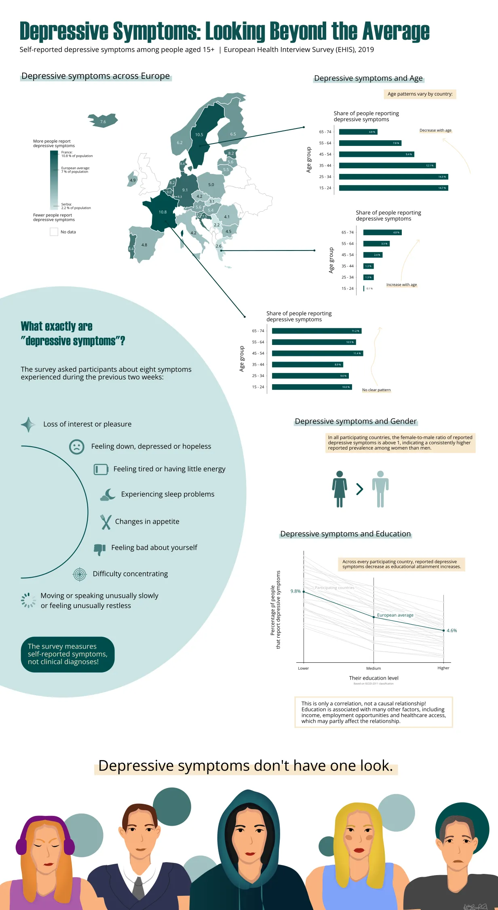

Depressive Symptoms: Infographic Project
Design goals
- Explain the actual survey mechanism so there is no miscommunication about what the numbers represent.
- Avoid implying causation from correlation.
- Highlight country-level variation where present rather than presenting only European averages.
- Use an appropriate title to remind readers there is a human story behind the numbers.
- Incorporate an illustration to humanise the data. Make sure to make it respectful and realistic.
- Avoid making the infographic feel overly clinical through the use of an organic and fresh colour palette.
Data & Methodology
- Source: European Health Interview Survey, 2019
- Geographic scope: participating European countries
- Measure: reported depressive symptoms based on eight survey questions
- Variables explored: geography, age, gender and educational attainment
- Tools:
> R and ggplot2 for data analysis and visualization
> Inkscape for infographic design and illustration

Preview. Scroll for the full-size.